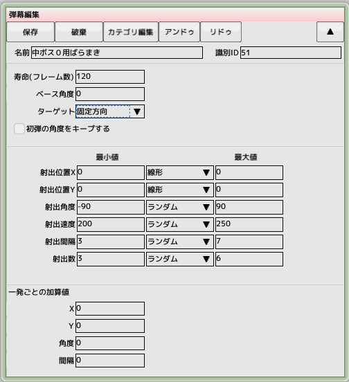

■元のページへ戻る
■元のページへ戻る

- 寿命(フレーム数)
弾幕が終了するまでの時間をフレーム単位で指定します
- ターゲット
狙う方角とオフセット角度を指定します
- 自機
自機の方角が0度になります
- 進行方向
キャラクタが移動している方角が0度になります
- 固定方向
画面下が0度になります
- 自分の方向
キャラクタが向いている方角が0度になります
- 初弾の角度をキープする
動いている標的を狙う場合、初弾以降も角度が変化してしまいます。チェックすると、初弾の角度をそれ以降の弾全てに適用されます
- 最小値と最大値
弾幕パラメータとして設定する値には一定の範囲を持つものがあります（射出位置や射出方向等）。それらのパラメータを指定する際に、最小値、最大値、計算方法の３つを指定します
- ランダム
最小値から最大値までの値をランダムに選びます
- 線形
開始直後の最小値から最大値までを徐々に変化させます。最大値に到達するのは寿命と同じ時間です
- サイン波
サイン波（正弦波）と同じ周期で変化します。初期値は最小値と最大値の中央値です
- 射出位置ＸＹ
射出位置のオフセット値を指定します
- 射出角度
射出角度のオフセット値を指定します
- 射出速度
射出速度を絶対値で指定します
- 射出間隔
射出と射出の間隔をフレーム単位で指定します
- 射出数
一回で射出する弾数を指定します
以下のパラメータは同時射出内で一発ごとに変化させるパラメータです
- ＸＹ
一発ごとの射出位置を変化させていきます
- 角度
一発ごとの射出角度を変化させていきます
- 間隔
一発ごとの射出間隔を変化させていきます
■ページ上部へ戻る